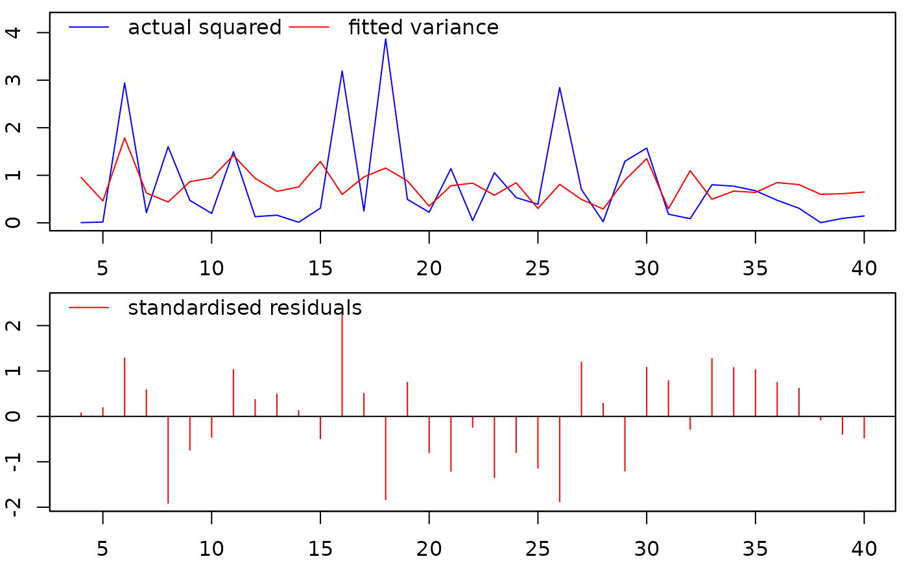

Methods and extraction functions for 'larch' objects
coef.larch.RdMethods and extraction functions for 'larch' objects
Usage
# S3 method for class 'larch'
coef(object, ...)
# S3 method for class 'larch'
fitted(object, ...)
# S3 method for class 'larch'
logLik(object, ...)
# S3 method for class 'larch'
model.matrix(object, response=FALSE, as.zoo=TRUE, ...)
# S3 method for class 'larch'
nobs(object, ...)
# S3 method for class 'larch'
plot(x, col=c("red","blue"), lty=c("solid","solid"),
lwd=c(1,1), ...)
# S3 method for class 'larch'
print(x, signif.stars=TRUE, verbose=FALSE, ...)
# S3 method for class 'larch'
residuals(object, ...)
# S3 method for class 'larch'
summary(object, ...)
# S3 method for class 'larch'
toLatex(object, ...)
# S3 method for class 'larch'
vcov(object, ...)Arguments
- object
an object of class 'larch'
- x
an object of class 'larch'
- response
logical. If
FALSE(default), the returned object does not contain the response (log(e^2)) used in the estimation- as.zoo
logical. If
TRUE(default), the returned object is of classzoo- col
a character vector of length two with the colours of actual (default=blue) and fitted (default=red) lines
- lty
types of actual (default=solid) and fitted (default=solid) lines
- lwd
widths of actual (default=1) and fitted (default=1) lines
- signif.stars
logical. If
TRUE, then p-values are additionally encoded visually, seeprintCoefmat- verbose
logical. If
TRUE, and ifxis the results of GETS modelling, then additional information pertaining to the GETS modelling is printed- ...
additional arguments
Value
- coef:
a vector containing the parameter estimates
- fitted:
a
zooobject with fitted values- logLik:
the log-likelihood (normal density)
- model.matrix:
the model matrix (see
model.matrix) of classzoo(default) of the model- nobs:
the number of observations
- plot:
a plot of the fitted values and the residuals
- print:
a print of the estimation results and, if
verbose=TRUEandxis the result of GETS modelling, additional information pertaining to the GETS modelling- residuals:
a
zooobject with the standardised residuals- summary:
a print of the items in the
larchobject- toLatex:
a LaTeX print of the estimation results (equation format)
- vcov:
variance-covariance matrix
Author
Genaro Sucarrat, https://www.sucarrat.net/
Examples
##simulate some data:
set.seed(123)
e <- rnorm(40)
x <- matrix(rnorm(40*2), 40, 2)
##estimate a log-ARCH(3)-X model:
mymod <- larch(e, arch=1:3, vxreg=x)
##print results:
print(mymod)
#>
#> Date: Fri Jan 16 14:36:51 2026
#> Dependent var.: e
#> Variance-Covariance: Robust (default)
#> No. of observations: 37
#> Sample: 4 to 40
#>
#> Log-variance equation:
#>
#> coef std.error t-stat p-value
#> vconst -0.278661 0.358593 -0.7771 0.4666
#> arch1 -0.036968 0.145774 -0.2536 0.8083
#> arch2 -0.073811 0.137326 -0.5375 0.6103
#> arch3 0.175974 0.158168 1.1126 0.3085
#> vxreg1 -0.012931 0.437286 -0.0296 0.9774
#> vxreg2 0.436216 0.299160 1.4581 0.1951
#>
#> Diagnostics and fit:
#>
#> Chi-sq df p-value
#> Ljung-Box AR(1) 0.77637 1 0.3783
#> Ljung-Box ARCH(4) 4.59786 4 0.3311
#>
#> Log-lik.(n=37): -46.3649
##LaTeX print of the estimation results (equation format):
toLatex(mymod)
#> % Date: Fri Jan 16 14:36:51 2026
#> % LaTeX code generated in R 4.5.2 by the gets package
#> % Note: The {eqnarray} environment requires the {amsmath} package
#> \begin{eqnarray}
#> \widehat{\ln\sigma_t^2} &=& - \underset{(0.3586)}{0.2787} - \underset{(0.1458)}{0.0370}arch1 - \underset{(0.1373)}{0.0738}arch2 + \underset{(0.1582)}{0.1760}arch3 - \underset{(0.4373)}{0.0129}vxreg1 + \underset{(0.2992)}{0.4362}vxreg2 \\[2mm]
#> && \qquad LogL=-46.3649 \qquad T = \nonumber \\
#> \end{eqnarray}
##plot the fitted vs. actual values, and the standardised residuals:
plot(mymod)

##extract coefficient estimates (automatically determined):
coef(mymod)
#> vconst arch1 arch2 arch3 vxreg1 vxreg2
#> -0.27866107 -0.03696848 -0.07381074 0.17597376 -0.01293074 0.43621622
##extract the fitted values:
fitted(mymod)
#> 4 5 6 7 8 9 10 11
#> 0.9556512 0.4598392 1.7852426 0.6273444 0.4381713 0.8657922 0.9455513 1.4182209
#> 12 13 14 15 16 17 18 19
#> 0.9352712 0.6618728 0.7553297 1.2914541 0.5983542 0.9652411 1.1520176 0.8817715
#> 20 21 22 23 24 25 26 27
#> 0.3505427 0.7806096 0.8359160 0.5811995 0.8428103 0.3022592 0.8091556 0.4929142
#> 28 29 30 31 32 33 34 35
#> 0.2904249 0.8978886 1.3507031 0.2955337 1.0958847 0.4957143 0.6667783 0.6396768
#> 36 37 38 39 40
#> 0.8471883 0.8041041 0.5988265 0.6125972 0.6483898
##extract the standardised residuals:
residuals(mymod)
#> 4 5 6 7 8 9
#> 0.07212588 0.19065769 1.28360666 0.58192760 -1.91112723 -0.73817080
#> 10 11 12 13 14 15
#> -0.45831390 1.02787074 0.37205664 0.49261712 0.12735369 -0.48911525
#> 16 17 18 19 20 21
#> 2.31006528 0.50673513 -1.83227334 0.74689649 -0.79854448 -1.20860008
#> 22 23 24 25 26 27
#> -0.23841040 -1.34581896 -0.79395849 -1.13688756 -1.87508132 1.19329540
#> 28 29 30 31 32 33
#> 0.28459830 -1.20111141 1.07883117 0.78447494 -0.28186738 1.27135927
#> 34 35 36 37 38 39
#> 1.07539941 1.02723575 0.74817370 0.61771632 -0.08000595 -0.39091374
#> 40
#> -0.47250181
##extract variance-covariance matrix:
vcov(mymod)
#> vconst arch1 arch2 arch3 vxreg1
#> vconst 0.128588632 0.020657682 0.0197850192 0.0361442207 -0.071859423
#> arch1 0.020657682 0.021250091 -0.0046833399 0.0049903516 0.009722179
#> arch2 0.019785019 -0.004683340 0.0188582987 0.0004076003 -0.013398161
#> arch3 0.036144221 0.004990352 0.0004076003 0.0250172580 -0.031623995
#> vxreg1 -0.071859423 0.009722179 -0.0133981611 -0.0316239946 0.191219036
#> vxreg2 0.007294587 0.003913319 0.0040405250 0.0080343014 0.043590638
#> vxreg2
#> vconst 0.007294587
#> arch1 0.003913319
#> arch2 0.004040525
#> arch3 0.008034301
#> vxreg1 0.043590638
#> vxreg2 0.089496879
##extract log-likelihood (based on the normal density):
logLik(mymod)
#> [1] -46.36488
##extract the model matrix of the model:
model.matrix(mymod)
#> vconst arch1 arch2 arch3 vxreg1 vxreg2
#> 4 1 0.88771495 -2.93780915 -1.15793897 2.16895597 0.64437655
#> 5 1 -5.30404710 0.88771495 -2.93780915 1.20796200 -0.22048656
#> 6 1 -4.09142971 -5.30404710 0.88771495 -1.12310858 0.33178196
#> 7 1 1.07890195 -4.09142971 -5.30404710 -0.40288484 1.09683901
#> 8 1 -1.54907804 1.07890195 -4.09142971 -0.46665535 0.43518149
#> 9 1 0.47024106 -1.54907804 1.07890195 0.77996512 -0.32593159
#> 10 1 -0.75127040 0.47024106 -1.54907804 -0.08336907 1.14880762
#> 11 1 -1.61638906 -0.75127040 0.47024106 0.25331851 0.99350386
#> 12 1 0.40438202 -1.61638906 -0.75127040 -0.02854676 0.54839696
#> 13 1 -2.04433706 0.40438202 -1.61638906 -0.04287046 0.23873174
#> 14 1 -1.82872793 -2.04433706 0.40438202 1.36860228 -0.62790608
#> 15 1 -4.40217517 -1.82872793 -2.04433706 -0.22577099 1.36065245
#> 16 1 -1.17454551 -4.40217517 -1.82872793 1.51647060 -0.60025959
#> 17 1 1.16097925 -1.17454551 -4.40217517 -1.54875280 2.18733299
#> 18 1 -1.39491098 1.16097925 -1.17454551 0.58461375 1.53261063
#> 19 1 1.35262977 -1.39491098 1.16097925 0.12385424 -0.23570036
#> 20 1 -0.70947963 1.35262977 -1.39491098 0.21594157 -1.02642090
#> 21 1 -1.49820197 -0.70947963 1.35262977 0.37963948 -0.71040656
#> 22 1 0.13124532 -1.49820197 -0.70947963 -0.50232345 0.25688371
#> 23 1 -3.04675059 0.13124532 -1.49820197 -0.33320738 -0.24669188
#> 24 1 0.05134416 -3.04675059 0.13124532 -1.01857538 -0.34754260
#> 25 1 -0.63246153 0.05134416 -3.04675059 -1.07179123 -0.95161857
#> 26 1 -0.93988161 -0.63246153 0.05134416 0.30352864 -0.04502772
#> 27 1 1.04553998 -0.93988161 -0.63246153 0.44820978 -0.78490447
#> 28 1 -0.35398267 1.04553998 -0.93988161 0.05300423 -1.66794194
#> 29 1 -3.74976330 -0.35398267 1.04553998 0.92226747 -0.38022652
#> 30 1 0.25878532 -3.74976330 -0.35398267 2.05008469 0.91899661
#> 31 1 0.45238168 0.25878532 -3.74976330 -0.49103117 -0.57534696
#> 32 1 -1.70445361 0.45238168 0.25878532 -2.30916888 0.60796432
#> 33 1 -2.44107527 -1.70445361 0.45238168 1.00573852 -1.61788271
#> 34 1 -0.22158233 -2.44107527 -1.70445361 -0.70920076 -0.05556197
#> 35 1 -0.25991332 -0.22158233 -2.44107527 -0.68800862 0.51940720
#> 36 1 -0.39304929 -0.25991332 -0.22158233 1.02557137 0.30115336
#> 37 1 -0.74607254 -0.39304929 -0.25991332 -0.28477301 0.10567619
#> 38 1 -1.18147849 -0.74607254 -0.39304929 -1.22071771 -0.64070601
#> 39 1 -5.56409186 -1.18147849 -0.74607254 0.18130348 -0.84970435
#> 40 1 -2.36858440 -5.56409186 -1.18147849 -0.13889136 -1.02412879
##print the entries of object 'mymod':
summary(mymod)
#> Length Class Mode
#> call 4 -none- call
#> date 1 -none- character
#> version 1 -none- character
#> e 37 -none- numeric
#> e2 37 -none- numeric
#> e.index 37 -none- numeric
#> e.name 1 -none- character
#> loge2 37 -none- numeric
#> vX 222 -none- numeric
#> vXnames 6 -none- character
#> qstat.options 2 -none- numeric
#> normality.JarqueB 1 -none- logical
#> tol 1 -none- numeric
#> n 1 -none- numeric
#> k 1 -none- numeric
#> df 1 -none- numeric
#> coefficients 6 -none- numeric
#> fitted 37 zoo numeric
#> residuals 37 zoo numeric
#> vcov 36 -none- numeric
#> vcov.type 1 -none- character
#> logl 1 -none- numeric
#> results 4 data.frame list
#> diagnostics 6 -none- numeric